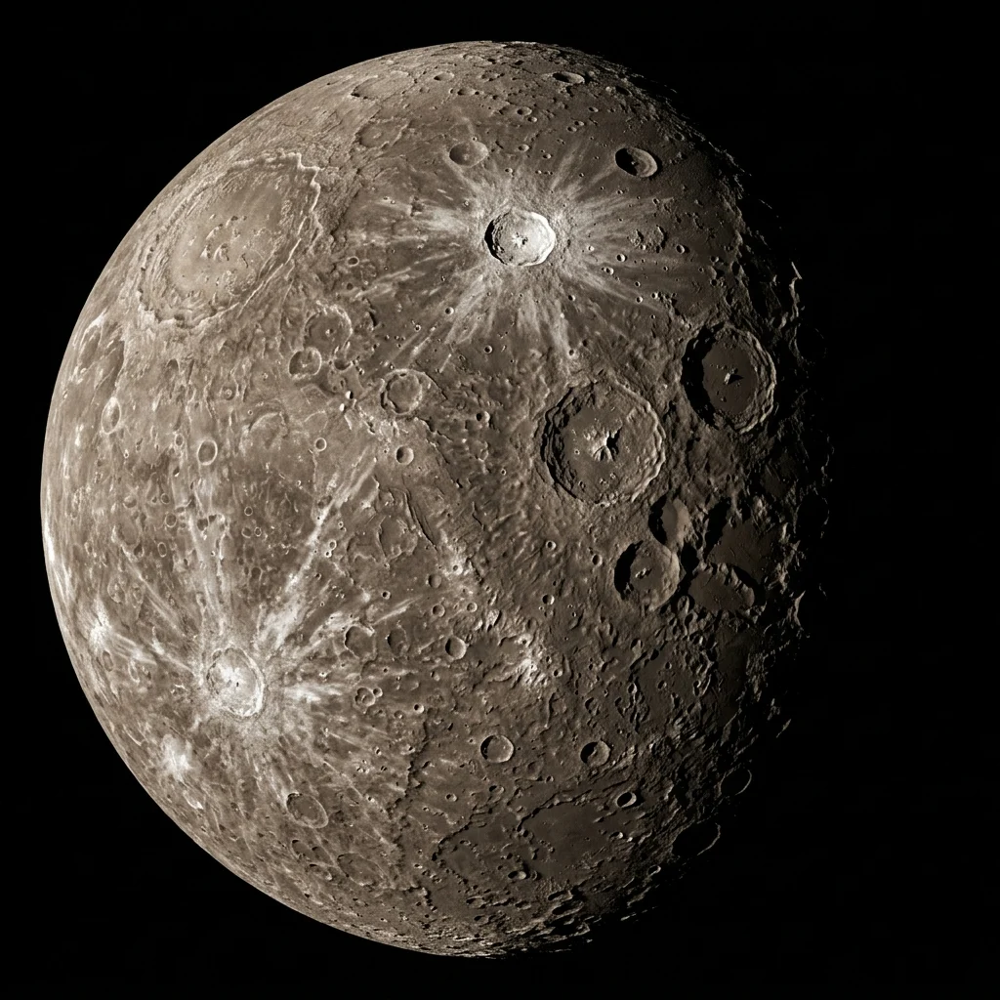

Foundational STEAM lesson for Mercury.
Mercury is the smallest planet in the solar system and closest to the Sun. With virtually no atmosphere to trap heat or weather the landscape, its ancient surface preserves billions of years of impact craters and dramatic lobate scarps caused by planetary cooling and shrinking.
